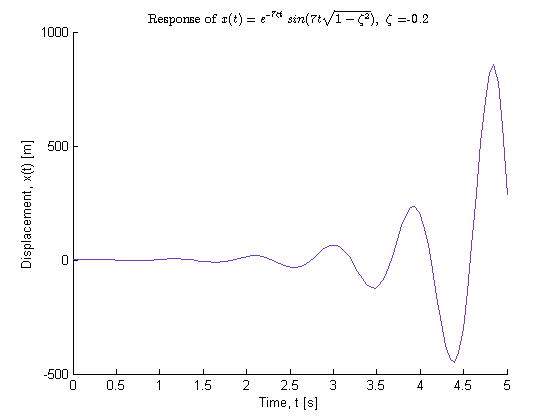
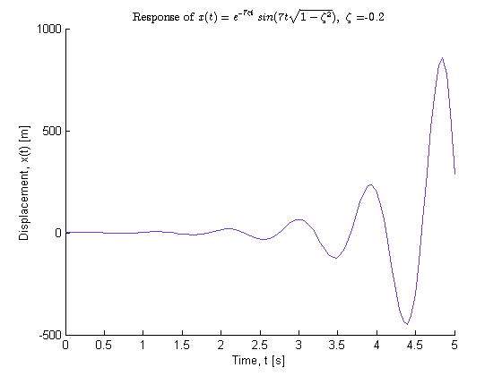

Contents
% Joel Lubinitsky % MAE 231 - HW6.1 % 02/25/15 clear all close all clc
Problem 1:
In order to understand the effect of damping in design, develop some sense of how the response changes with the damping ratio by plotting the response of a single-degree-of-freedom system for a fixed amplitude, frequency, and phase, as changes through a set of values between -1 and 1. Choose a set of 11 values in that range, and plot the response of a system with general solution: for each value of zeta. This can be done on the same figure, as long as the distinctive behavior of each response is distinguishable. If not, use a few figures.
Find: Find 11 responses for
Calculations
x = @(time, zeta) exp(-7 .* zeta .* time) .* sin(7 .* time... .* sqrt(1 - zeta .^ 2)); time = linspace(0, 5, 100); zeta = linspace(-1, 1, 11); indexZeta = find(zeta > 0); strZeta = {'\zeta = 0.2', '\zeta = 0.4', '\zeta = 0.6', '\zeta = 0.8',... '\zeta = 1'}; for n = [1 : length(zeta)] if zeta(n) <= 0 figure(n) hold on title(strcat('Response of $$ x(t) = e^{-7\zeta t} sin(7t\sqrt{1 - \zeta^2}), \ \zeta = $$',... num2str(zeta(n))), 'Interpreter', 'latex') else figure(100) hold on title('Response of $$ x(t) = e^{-7\zeta t} sin(7t\sqrt{1 - \zeta^2}), \ \zeta > 0 $$',... 'Interpreter', 'latex') end plot(time, x(time, zeta(n)), 'color', rand(1, 3)) xlabel('Time, t [s]') ylabel('Displacement, x(t) [m]') end figure(100) legend(strZeta)
 
